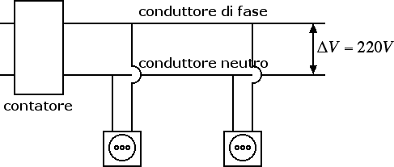

Corrente elettrica
L'impianto elettrico dell'abitazione
In questa sezione descriveremo brevemente il funzionamento dell'impianto elettrico di casa. Abbiamo già detto che il collegamento delle varie prese a cui sono collegati poi gli elettrodomestici è un collegamento in parallelo.

Dal momento che gli utilizzatori sono posti in parallelo, avremo che l'intensità assorbita dal contatore è tanto maggiore quanto maggiore è il numero di utilizzatori accesi, mentre la potenza assorbita è sempre la somma delle potenze assorbite. La differenza di potenziale tra il conduttore di fase e il conduttore neutro è pari a ΔV = 220 V.
Solitamente si tiene distinto il circuito per l'illuminazione dal circuito di potenza usato per alimentare gli elettrodomestici. La ragione è la seguente: una lampadina assorbe una potenza dell'ordine dei 60 W. L'intensità è pari a i = P / ΔV = 60 W / 220 V = 0.27 A. In un asciugacapelli da 1600 W circola invece una corrente i = 1600 W / 220 V = 7.27 A, 27 volte superiore a quella che circola nella lampadina. Di conseguenza, a parità di differenza di potenziale applicata, la resistenza dei fili del circuito di potenza deve essere molto minore rispetto alla resistenza dei fili del circuito per l'illuminazione. Usando la seconda legge di Ohm, possiamo ottenere una resistenza minore per il circuito di potenza usando fili di diametro maggiore.
Il cortocircuito può essere dovuto a due diverse ragioni. La prima ragione è dovuta al fatto che inavvertitamente stabiliamo un contatto tra il conduttore di fase e il conduttore neutro. In questo caso infatti abbiamo un filo di lunghezza l minima. La seconda legge di Ohm ci dice che la resistenza R di tale filo è molto piccola, conseguentemente la corrente i che passa nel filo diventa troppo elevata e si crea un cortocircuito (
La seconda ragione per cui la corrente può saltare è quando gli utilizzatori assorbono una potenza maggiore di quella erogata dal contatore. La potenza massima erogata dal contatore, circa 3 kW, corrisponde a un'intensità massima imax = 3 kW / 220 V = 13.6 A. Quando la corrente assorbita diventa maggiore di questa corrente massima (ad esempio perché abbiamo acceso troppi utilizzatori) ci sono dei dispositivi (detti fusibili) che bloccano il passaggio di ulteriore corrente.